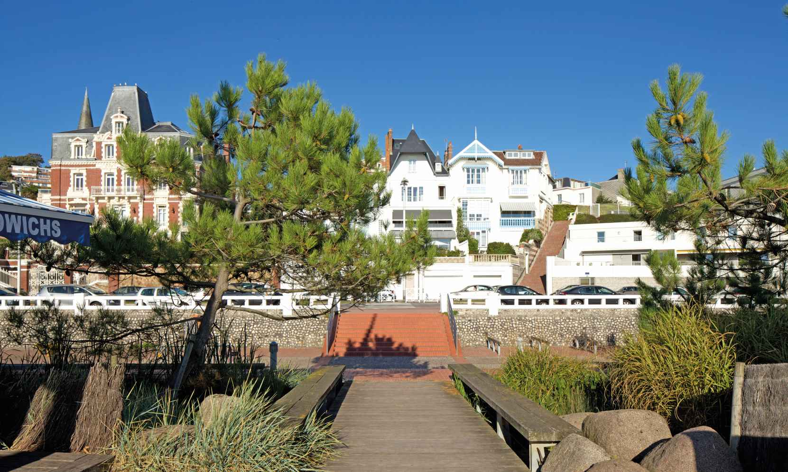

Survolez l'image et agrandissez/réduisez la vue à l'aide de la molette.
Budget: 6 100 000 € HT pour les aménagements, 801 370 € HT pour les locaux saisonniers
Surface: 34 000 m²
Date début: 1992
Date fin: 1994
Maîtrise d'ouvrage: Ville du Havre, atelier littoral
Co-traitant(s): bureau des paysages conjointement avec les services techniques de la ville
Description:
L’historien et géographe Fernand Braudel écrit dans son ouvrage, que le paysage s’impose
quand il change : seuils, marches, lisières révèlent mieux un site que la recherche de ses
caractères dominants. La question du paysage ne renvoie pas à l’idée de centralité mais à celle
des transitions et des passages. On y traite d’horizons comme d’usages. L’usure du temps
donne aux choses la couleur du lieu. Le projet d’aménagement réorganise le passage d’un site
à un autre comme le passage du temps. Laisser libre la compréhension d’un site, s’appuyer
sur sa géographie et son histoire, refuser la dimension décorative d’un aménagement, révéler
les passages : telles sont les orientations de notre projet pour la plage du Havre.
Il s’appuie
également sur l’idée de l’installation, intervention humaine éphémère dans un cadre permanent,
ici réorganisé. La question posée est de reconquérir de cette ville tournée vers son estuaire.
De la ville à l’horizon marin, des collines à la plaine alluviale : la lecture de la recomposition
des éléments artificiels et naturels stratifiés en lignes parallèles jusqu’à la mer donne toute
la dimension de l’étendue. Le vocabulaire employé, containers pour les activités saisonnières,
prairies et gazon en prolongement de la colline, balustrades blanches le long du boulevard,
assume les différents héritages de la ville.
{kind=link}
{kind=link}
{kind=link}
{kind=link}